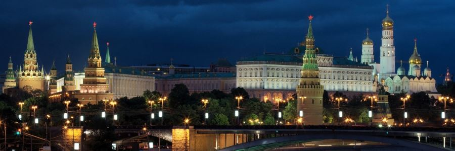

SUURSUGUNE VENEMAA PEALINN MOSKVA 22.-26.OKTOOBER 2018
Moskvas on palju avastada või taasavastada, suurlinn kutsub!

22. oktoober
Varajane väljasõit Tallinnast Vene Kultuurikeskuse juurest Mere Puiesteelt.
Peatused teel. Hilisõhtul jõuame Moskvasse ja majutume Izmailovo hotelli. Kahesed toad.
23.oktoober
Hommikusöök hotellis; rootsi laud
Moskvat tutvustav üldekskursioon bussiga, kestvus 4 tundi.
24.oktoober
Hommikusöök hotellis, rootsi laud
Ekskursioon Moskva Kremli territooriumile ja Relvakambrisse -4 tundi. Lisatasu eest a 40 eur koos sissepäsupiletitega.
Riiklik Relvakamber. Hoone püstitati 1851. aastal arhitekt K- Thoni projekti järgi spetsiaalselt muuseumi jaoks. Praeguseks on sinna kogutud rohkesti unikaalseid käsitöö- ja kunstiesemeid. Relvakambri ekspositsiooni hulka kuulub tulirelvi, XII—XX sajandi vene meistrite kuld- ja hõbetooteid, XIV—XX sajandi kangaid, rõivaid, krooniaardeid. Relvasaalis võib näha nii vene kui välismaa meistrite valmistatud haruldasi relvi ja raudrüüsid, kiivreid, soomussärke, kilpe, arkebuuse ja musketeid, saableid, jahipüsse. Teises saalis on väljas kullast ja hõbedast vaasid, kannud ja karikad, samuti vanade meistrite valmistatud portselan-, klaas- ning juveeltooted. Paljud Relvakambri kollektsioonis olevaist võõramaa meistrite töödest on Vene tsaarid saanud kingituseks välisriikide saadikuilt. Nii leidub hõbedakambris tuhandeid välismaa päritoluga, sageli väga haruldasi, unikaalseidki esemeid, mis on inglise, austria, taani, hollandi, poola, türgi, jaapani ja teiste maade kullasseppade või juveliiride kätetöö. Relvakambris säilitatakse Vene tsaaride troone, millel on hindamatu kunstiline, ajalooline ja materiaalne väärtus, samuti muid monarhi võimu sümboleid, sealhulgas kuulsat Monomahhi mütsi ning sadadest teemantidest säravat keisrinna Anna Ivanovna krooni. Muuseumis on eksponeeritud luksuslikke hobuseriistu: sadulaid, sadulatekke, valjaid, jaluseid. Samas saab näha kunstipäraste kaunistustega tõldu ja saane.
25.oktoober
Hommikusöök hotellis.
Novodevitšje kalmistule minek.
Novodevitšje kalmistuon surnuaed Moskvas Novodevitši nunnakloostrivahetus läheduses, viie metroopeatuse kaugusel Kremlist, Moskva jõekaldapealsel.
Surnuaed tekkis sinna juba 16. sajandil, ajal mil Moskva suurvürst Vassili IIIrajas kloostri( 1524).
Tänapäeval võtab kalmistu enda alla seitse hektarit maad ja sinna on maetud vähemalt 22 000 inimest.
Algselt maeti sinna vaid aadlikkeja kõrgeid vaimulikke. Alates 19. sajandist hakati surnuaiale matma ka silmapaistvaid lihtsurelikke. Nõukogude Liiduajal muutus kalmistu n-ö esinekropoliks, kuhu maeti vaid kõrgeimad riigitegelased ja parteiliidrid. Samuti maeti sinna sõjaväe eliiti kuulunud isikud, Nõukogude Liidu kangelased, vene tuntud kirjanikud, kunstnikud, teadlased ja teatritegelased. Viimasel ajal maetakse sinna ruuminappuse tõttu üldiselt vaid tuntud kultuuritegelasi. Otsuse, keda lubatakse matta sinna kalmistule, teeb riigi valitsus ja presidendi kantselei.
Paljud tuntud tegelased ei maetud Novodevitšje kalmistule mitte kohe pärast oma surma. Näiteks Nikolai Gogol, Anton Tšehhov ja Issaak Levitanmaeti kalmistule ümber alles 1930. aastate algul.
Tänapäeval pääseb kalmistule uudistama igaüks, kuigi see pole alati nii olnud. Näiteks pärast Nikita Hruštšovi surma ( 1971) pääses surnuaiale vaid erilubade alusel. Eriload väljastati sugulastele, kes käisid kalme hooldamas.
Tretjakovi galerii-kunstimuuseum
Rikkalik valik vene kunsti.
Tretjakovi galerii, ametlik nimetus Riiklik Tretjakovi galerii( Государственная Третьяковская галерея), on Moskvasasuv kunstimuuseum.
Tretjakovi galerii asutas 1856. aastal Pavel Tretjakov. Aastal 1892kinkis ta oma kogu Moskva linnale. [1]
Muuseumi ajalugu algas 1856. aastal, kui vene kaupmees ja kunstikoguja Pavel Tretjakovalustas Vene kunstnike teoste kogumist. ühed esimesed soetatud maalid olid Vassili Hudjakovimaal " Kähmlus Soome salakaubavedajatega" ja Nikolai Schilderimaal "Kiusatus". [2]
Muuseum avati külastajatele 15. augustil 1893 [3] majas, mille Tretjakovide perekond ostis 1851. aastal. See kandis nimetust Moskva Paveli ja Sergei Tretjakovi linna galerii.
Sissepääs lisatasu eest täiskasvanule a 500 RUB, õpilasele-üliõpilasele 200 RUB
Reisi hind 299 .- eur sisldab:
- Sõit mugava bussiga
- 4 ööd Moskvas Izmailovo hotellis kahestes tubades
- 4 hommikusööki hotelli rootsi lauas
- Giid reisisaatja teenused
- Kohaliku giidi teenused
- Moskva üldekskursiooni ja Novodevitsche kalmistu külastust
Lisatasu eest :
Venemaa viisa a 65.- eur ja tervisekindlustus vt. lisainfo lehelt
*** Giid-grupisaatjaks on suure Venemaa kogemusega ja sealseid olusid tundev Piret Karilaid. Moskva ekskursioone viib läbi kohalik giid ja need tõlgitakse eesti keelde.
*** Kremli ekskursiooni eest tuleb tasuda koos reisi eest tasumisega, hiljemalt 1 kuu enne reisi. Tretjakovi galerii sissepääsu eest saab tasuda kohapeal.
*** Moskva Suures teatris etendub 23. ja 24.10 Traviata. Piletid hinnaga alates 2500 RUB veel internetis saadaval.